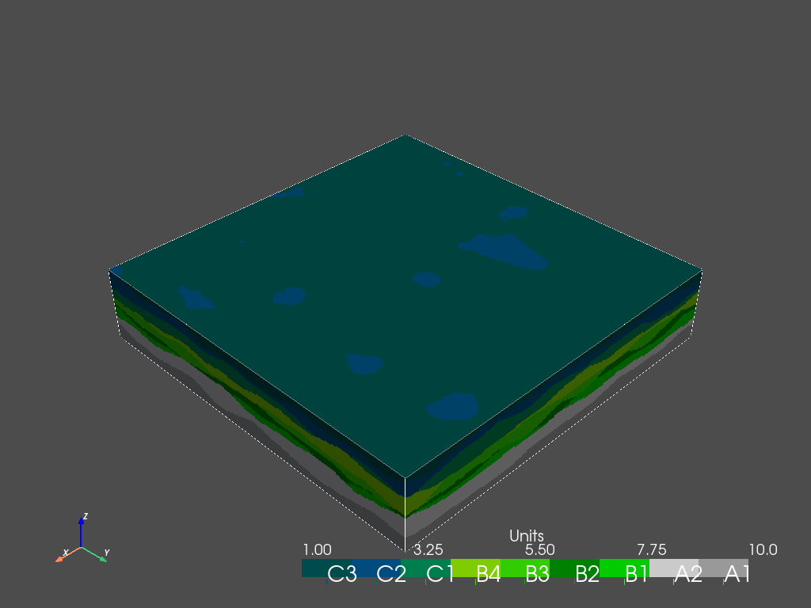

Hierarchical modeling with ArchPy¶
This notebook demonstrates the capabilities of ArchPy to simulate any level of hierarchy.
[1]:
import numpy as np
import matplotlib.pyplot as plt
import geone
import geone.covModel as gcm
import os
import sys
import pyvista as pv
pv.set_jupyter_backend('static')
try:
import ArchPy
except: # if ArchPy is not installed
print("ArchPy not installed")
sys.path.append("../..")
import ArchPy
from ArchPy.base import Unit, Facies, Prop, Pile, Arch_table, Surface
ArchPy not installed
Project and grid¶
[2]:
T1 = Arch_table(name = "Hierarchy_is_fun", working_directory="Hierarch", seed = 10)
sx = 1
sy = 1
sz = 1
nx = 250
ny = 250
nz = 50
ox = 0
oy = 0
oz = 0
dimensions = (nx, ny, nz)
spacing = (sx, sy, sz)
origin = (ox, oy, oz)
T1.add_grid(dimensions, spacing, origin) #adding the grid
## Adding Grid ##
## Grid added and is now simulation grid ##
This exemple is purely technical and have no other purpose to test ArchPy capabilities.
ArchPy can then simulate sub-units inside other bigger units by setting the f_method (in unit dic_facies) to SubPile. It is then necessary to provide an ArchPy ``Pile`` object in the ``dic_facies``. Below are many different examples with various hierarchical level.
Let’s create a lot of units, sub-units, …¶
C unit¶
[3]:
#Let's use the same covmodels for all units for simplicity
cm = gcm.CovModel2D(elem=[("cubic", {"w":5,"r":[55,55]})])
#SubPile C32
C322 = Unit("C322",order=1,color=(0,0.3,0.4,0.2), surface=Surface(),ID=20)
C321 = Unit("C321",order=2,color=(0,0.2,0.3,0.2),
surface=Surface(name="SC321",contact="erode", dic_surf={'int_method': 'grf_ineq', 'covmodel': cm, "mean":48.5}), ID=21
)
PC32 = Pile("C32")
PC32.add_unit([C322,C321])
#Subpile C3
C32 = Unit("C32",order=1,color=(0,0.3,0.4,0.5), surface=Surface(),ID=7,dic_facies={"f_method":"SubPile", "SubPile":PC32}
)
C31 = Unit("C31",order=2,color=(0,0.3,0.3,0.5),
surface=Surface(name="SC31", contact="erode", dic_surf={'int_method': 'grf_ineq', 'covmodel': cm, "mean":47}),
ID=8
)
PC3 = Pile("PC3")
PC3.add_unit([C32, C31])
#SubPile C1
C12 = Unit("C12",order=1,color=(0,0.4,0.5,0.5), surface=Surface(),ID=9
)
C11 = Unit("C11",order=2,color=(0,0.5,0.3,0.5),
surface=Surface(name="SC11", contact="erode", dic_surf={'int_method': 'grf_ineq', 'covmodel': cm, "mean":36}),
ID=10
)
PC1 = Pile("PC1")
PC1.add_unit([C12, C11])
#subpile C
C3 = Unit("C3",order=1,color=(0,0.3,0.3,0.8), surface=Surface(),ID=4,dic_facies={"f_method":"SubPile", "SubPile":PC3}
)
C2 = Unit("C2", order=2, color = (0,0.3,0.5,0.8),
surface=Surface(name="SC2", contact="erode", dic_surf={'int_method': 'grf_ineq', 'covmodel': cm, "mean":45}),
ID = 5
)
C1 = Unit("C1", order=3, color = (0,0.5,0.3,0.8),
surface=Surface(name="SC1", contact="erode", dic_surf={'int_method': 'grf_ineq', 'covmodel': cm, "mean":39}),
ID = 6,
dic_facies={"f_method":"SubPile", "SubPile":PC1}
)
PC = Pile(name="PC")
PC.add_unit([C3, C2, C1])
C = Unit("C",order=1,color=(0,0,0.3,1), surface=Surface(),ID=1,dic_facies={"f_method":"SubPile", "SubPile":PC})
Unit C322: Surface added for interpolation
Unit C321: Surface added for interpolation
Stratigraphic unit C322 added
Stratigraphic unit C321 added
Unit C32: Surface added for interpolation
Unit C31: Surface added for interpolation
Stratigraphic unit C32 added
Stratigraphic unit C31 added
Unit C12: Surface added for interpolation
Unit C11: Surface added for interpolation
Stratigraphic unit C12 added
Stratigraphic unit C11 added
Unit C3: Surface added for interpolation
Unit C2: Surface added for interpolation
Unit C1: Surface added for interpolation
Stratigraphic unit C3 added
Stratigraphic unit C2 added
Stratigraphic unit C1 added
Unit C: Surface added for interpolation
B unit¶
[4]:
#SubPile PB
B4 = Unit("B4", order=1, color = (0.5,0.8,0,0.8), surface=Surface(),ID = 11)
B3 = Unit("B3", order=2, color = (0.2,0.8,0,0.8),
surface=Surface(name="SB3", contact="erode", dic_surf={'int_method': 'grf_ineq', 'covmodel': cm, "mean":29}),
ID = 12
)
B2 = Unit("B2", order=3, color = (0,0.5,0,0.8),
surface=Surface(name="SB2", contact="erode", dic_surf={'int_method': 'grf_ineq', 'covmodel': cm, "mean":25}),
ID = 13
)
B1 = Unit("B1", order=4, color = (0,0.8,0,0.8),
surface=Surface(name="SB1", contact="erode", dic_surf={'int_method': 'grf_ineq', 'covmodel': cm, "mean":21}),
ID = 14
)
PB = Pile("PB")
PB.add_unit([B4,B3,B2,B1])
#unit B
B = Unit("B", order=2, color=(0,0.3,0,1),
surface=Surface(name="SB", contact="erode", dic_surf={'int_method': 'grf_ineq', 'covmodel': cm, "mean":33}),
ID=2,
dic_facies={"f_method":"SubPile", "SubPile":PB}
)
Unit B4: Surface added for interpolation
Unit B3: Surface added for interpolation
Unit B2: Surface added for interpolation
Unit B1: Surface added for interpolation
Stratigraphic unit B4 added
Stratigraphic unit B3 added
Stratigraphic unit B2 added
Stratigraphic unit B1 added
Unit B: Surface added for interpolation
A unit¶
[5]:
#Subpile PA1
A13 = Unit("A13", order=1, color=(0.4,0.4,0.4,0.4), surface=Surface(), ID = 17)
A12 = Unit("A12", order=2, color=(0.25,0.25,0.25,0.25),
surface=Surface(name="SA12", contact="erode", dic_surf={'int_method': 'grf_ineq', 'covmodel': cm, "mean":5}),
ID=18
)
A11 = Unit("A11", order=2, color=(0.05,0.05,0.05,0.05),
surface=Surface(name="SA11", contact="erode", dic_surf={'int_method': 'grf_ineq', 'covmodel': cm, "mean":2}),
ID=19
)
PA1 = Pile("PA1")
PA1.add_unit([A13,A12,A11])
# subpile PA
A2 = Unit("A2", order=1, color=(0.8,0.8,0.8,0.8), surface=Surface(), ID = 15)
A1 = Unit("A1", order=2, color=(0.6,0.6,0.6,0.6),
surface=Surface(name="SA1", contact="erode", dic_surf={'int_method': 'grf_ineq', 'covmodel': cm, "mean":8}),
ID=16,
dic_facies={"f_method":"SubPile", "SubPile":PA1}
)
PA = Pile("PA")
PA.add_unit([A2,A1])
A = Unit("A", order=3, color="black",
surface=Surface(name="SA", contact="erode", dic_surf={'int_method': 'grf_ineq', 'covmodel': cm, "mean":17}),
ID=3,
dic_facies={"f_method":"SubPile", "SubPile":PA}
)
Unit A13: Surface added for interpolation
Unit A12: Surface added for interpolation
Unit A11: Surface added for interpolation
Stratigraphic unit A13 added
Stratigraphic unit A12 added
Stratigraphic unit A11 added
Unit A2: Surface added for interpolation
Unit A1: Surface added for interpolation
Stratigraphic unit A2 added
Stratigraphic unit A1 added
Unit A: Surface added for interpolation
[6]:
P1 = Pile(name = "Master_pile")
P1.add_unit([C,B,A])
T1.set_Pile_master(P1)
Stratigraphic unit C added
Stratigraphic unit B added
Stratigraphic unit A added
Pile sets as Pile master
[7]:
T1.process_bhs()
##### ORDERING UNITS #####
Pile Master_pile: ordering units
Stratigraphic units have been sorted according to order
Pile PC: ordering units
Stratigraphic units have been sorted according to order
Pile PC3: ordering units
Stratigraphic units have been sorted according to order
Pile C32: ordering units
Stratigraphic units have been sorted according to order
Pile PC1: ordering units
Stratigraphic units have been sorted according to order
Pile PB: ordering units
Stratigraphic units have been sorted according to order
Pile PA: ordering units
Stratigraphic units have been sorted according to order
Pile PA1: ordering units
Stratigraphic units have been sorted according to order
units A11 and A12 have the same order
Changing orders for that they range from 1 to n
hierarchical relations set
No borehole found - no hd extracted
[8]:
T1.compute_surf(1)
Boreholes not processed, fully unconditional simulations will be tempted
########## PILE Master_pile ##########
Pile Master_pile: ordering units
Stratigraphic units have been sorted according to order
#### COMPUTING SURFACE OF UNIT A
A: time elapsed for computing surface 0.06405782699584961 s
#### COMPUTING SURFACE OF UNIT B
B: time elapsed for computing surface 0.06505918502807617 s
#### COMPUTING SURFACE OF UNIT C
C: time elapsed for computing surface 0.0 s
Time elapsed for getting domains 0.23421239852905273 s
##########################
########## PILE PC ##########
Pile PC: ordering units
Stratigraphic units have been sorted according to order
#### COMPUTING SURFACE OF UNIT C1
C1: time elapsed for computing surface 0.057051897048950195 s
#### COMPUTING SURFACE OF UNIT C2
C2: time elapsed for computing surface 0.06005525588989258 s
#### COMPUTING SURFACE OF UNIT C3
C3: time elapsed for computing surface 0.0 s
Time elapsed for getting domains 0.22720646858215332 s
##########################
########## PILE PC3 ##########
Pile PC3: ordering units
Stratigraphic units have been sorted according to order
#### COMPUTING SURFACE OF UNIT C31
C31: time elapsed for computing surface 0.05905342102050781 s
#### COMPUTING SURFACE OF UNIT C32
C32: time elapsed for computing surface 0.0 s
Time elapsed for getting domains 0.15414047241210938 s
##########################
########## PILE C32 ##########
Pile C32: ordering units
Stratigraphic units have been sorted according to order
#### COMPUTING SURFACE OF UNIT C321
C321: time elapsed for computing surface 0.06305694580078125 s
#### COMPUTING SURFACE OF UNIT C322
C322: time elapsed for computing surface 0.0 s
Time elapsed for getting domains 0.1531391143798828 s
##########################
########## PILE PC1 ##########
Pile PC1: ordering units
Stratigraphic units have been sorted according to order
#### COMPUTING SURFACE OF UNIT C11
C11: time elapsed for computing surface 0.059053897857666016 s
#### COMPUTING SURFACE OF UNIT C12
C12: time elapsed for computing surface 0.0 s
Time elapsed for getting domains 0.15013647079467773 s
##########################
########## PILE PB ##########
Pile PB: ordering units
Stratigraphic units have been sorted according to order
#### COMPUTING SURFACE OF UNIT B1
B1: time elapsed for computing surface 0.058052778244018555 s
#### COMPUTING SURFACE OF UNIT B2
B2: time elapsed for computing surface 0.05805253982543945 s
#### COMPUTING SURFACE OF UNIT B3
B3: time elapsed for computing surface 0.05905342102050781 s
#### COMPUTING SURFACE OF UNIT B4
B4: time elapsed for computing surface 0.0 s
Time elapsed for getting domains 0.3092811107635498 s
##########################
########## PILE PA ##########
Pile PA: ordering units
Stratigraphic units have been sorted according to order
#### COMPUTING SURFACE OF UNIT A1
A1: time elapsed for computing surface 0.06005430221557617 s
#### COMPUTING SURFACE OF UNIT A2
A2: time elapsed for computing surface 0.0 s
Time elapsed for getting domains 0.1561422348022461 s
##########################
########## PILE PA1 ##########
Pile PA1: ordering units
Stratigraphic units have been sorted according to order
#### COMPUTING SURFACE OF UNIT A11
A11: time elapsed for computing surface 0.06405830383300781 s
#### COMPUTING SURFACE OF UNIT A12
A12: time elapsed for computing surface 0.05505013465881348 s
#### COMPUTING SURFACE OF UNIT A13
A13: time elapsed for computing surface 0.0 s
Time elapsed for getting domains 0.2202000617980957 s
##########################
### 2.6303908824920654: Total time elapsed for computing surfaces ###
Note : Pyvista does not support rgba code, this explains the difference between the colors of the pyvsita plot and mtplotlib
[9]:
T1.plot_units(h_level=2)
C:\Users\emmal\Anaconda3\envs\LS\lib\site-packages\pyvista\core\grid.py:511: PyVistaDeprecationWarning: `dims` argument is deprecated. Please use `dimensions`.
'`dims` argument is deprecated. Please use `dimensions`.', PyVistaDeprecationWarning

[10]:
T1.plot_cross_section([(0,0),(100,200)],ratio_aspect=5)